Little Travel Book, round 1
Four artistic worlds for the same site, each shown as the phone landing (light and dark), four key phone screens, and a desktop view. All places, lists, notes and shows are real data from his exports (shows are a 19hz.info snapshot from 24 Nov). Pick one or two to branch in round 2, or say what to merge.
A · The Sampler
Cross-stitch on dyed linenEvery saved place is a stitch on mauve linen, and her hearts are cross-stitched in, leg by leg, as she taps. Her picks become a little sampler she sends back.
Risk: embroidery can turn twee if the scale is timid.
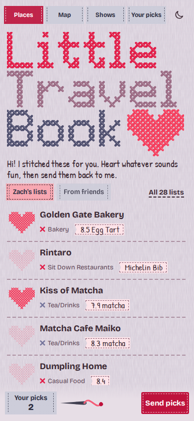
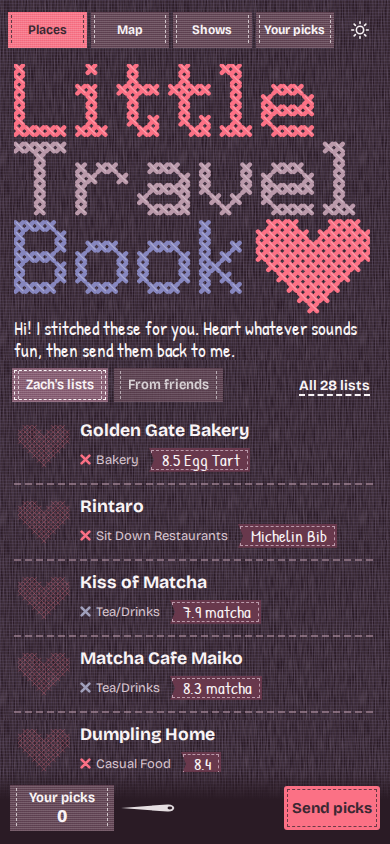
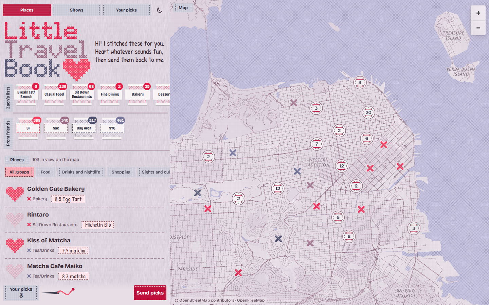
B · Photo Booth Sticker Sheet
Purikura stickers and gel penThe book is a purikura sticker sheet: places are die-cut stickers with doodles, and a heart stamps a puffy sticker on. Her picks print out as a photo-booth strip for him.
Risk: the most familiar cute answer; can tip into childish, and there are no place photos.
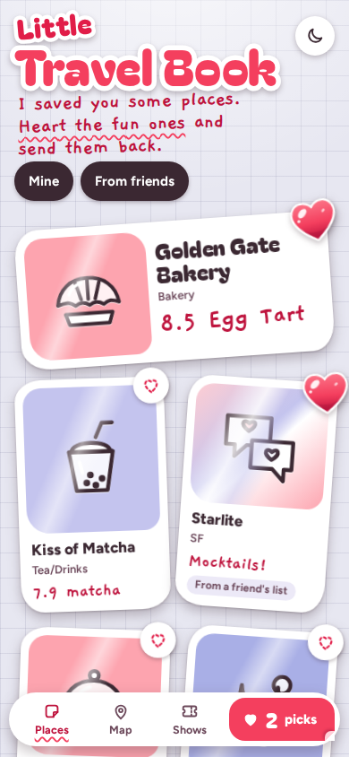
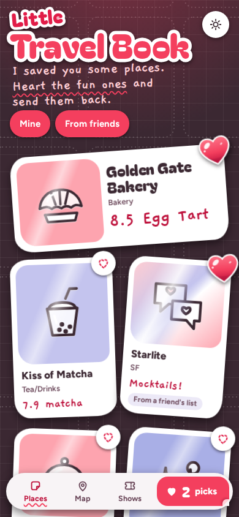
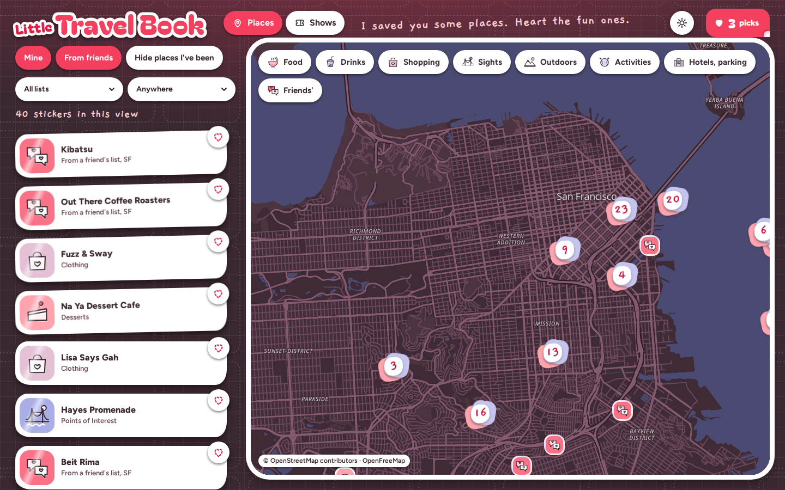
C · Par Avion
Airmail letter, stamps, wax sealHe mailed her a letter of places: each one is a perforated stamp, and her heart presses a rose wax seal. Her picks are the airmail letter she writes back.
Risk: can read vintage or wedding-invitation if the colour is shy.
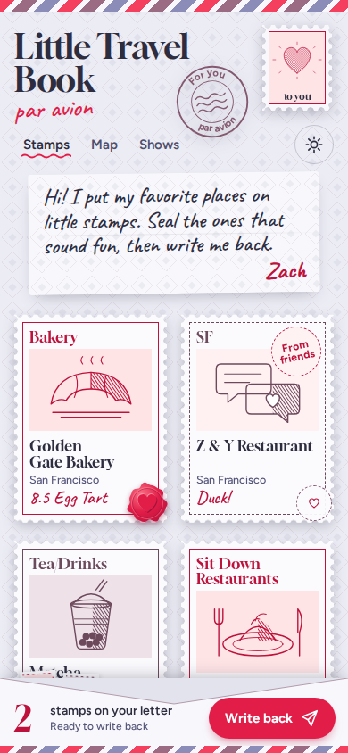
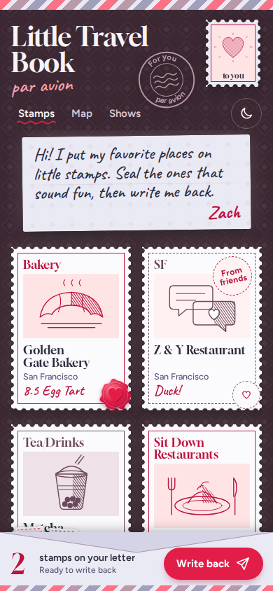
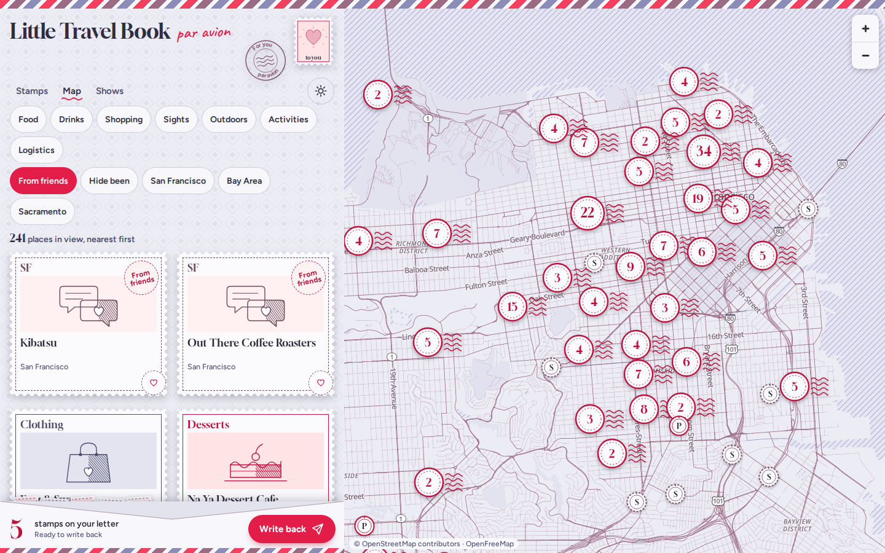
D · Two-Ink Zine
Risograph, rose and mauve overprintA two-ink riso zine of his places, with a huge misregistered title, numbered listings and margin notes. Her heart is a rubber stamp, and her picks fill the tear-off order form.
Risk: graphic and loud; can read cool rather than romantic.
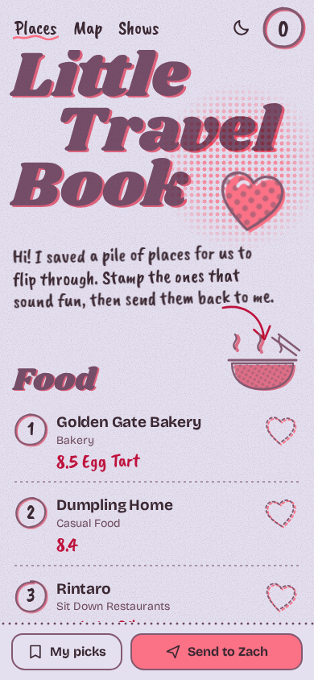
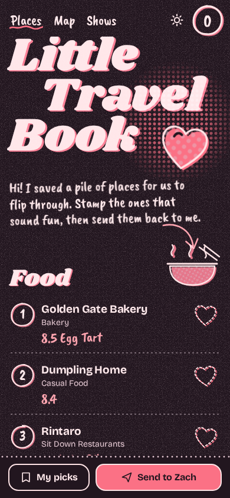
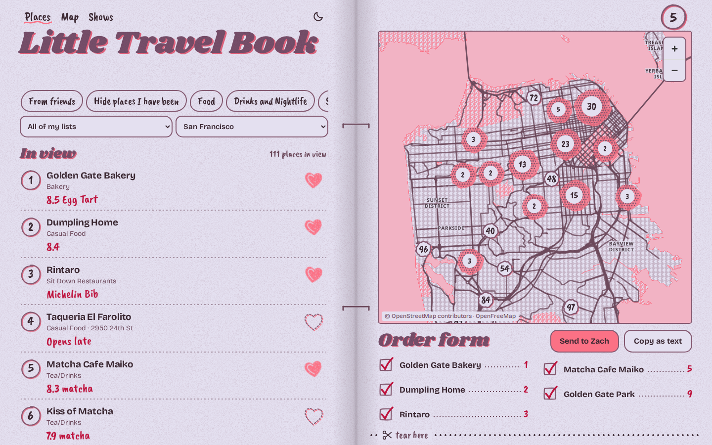
To pick, tell us
- Which world feels most like something you'd hand her: stitched (A), stickers (B), a letter (C) or a zine (D)? Keep one or two for round 2.
- How cute versus grown-up? B is the cutest and D the most graphic; A and C sit in between.
- Should the site open in dark or light for her, given that zachle.info defaults to dark? Both themes will work either way.
- How should the heart feel when she taps it: stitched in slowly (A), stamped on quickly (B, D) or pressed like a seal (C)?
- How should she send her picks back: as a made object (a sampler, photo strip, letter or order form) or as a plain list?
- Is the scrapbook with washi tape and pressed flowers something you want to see after all? It was left out on purpose as the obvious choice. A re-roll can also deal fresh worlds.